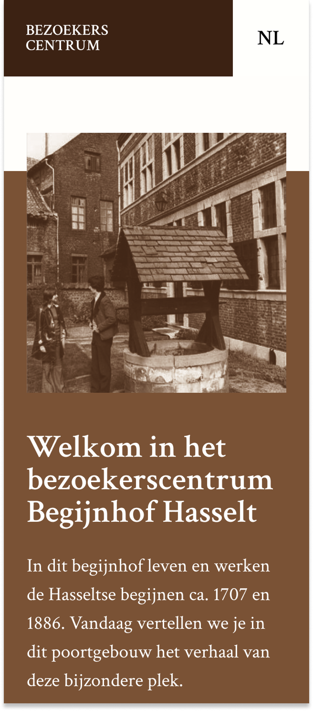
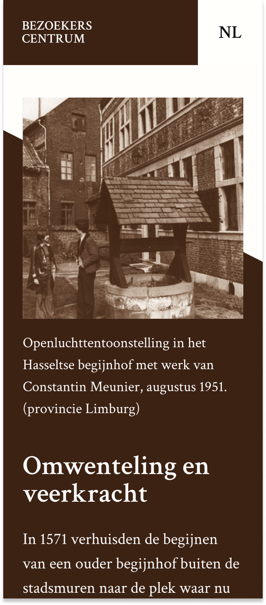
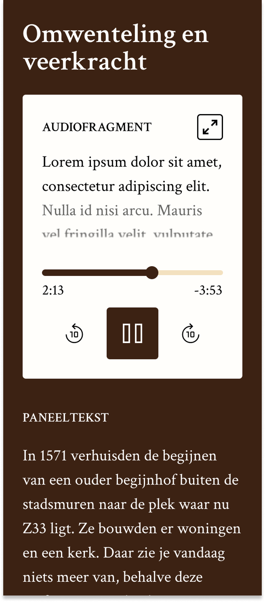

Begijnhof Hasselt
Een concept voor een erfgoedwebsite voor Begijnhof Hasselt, gebouwd rond QR-gestuurde content, meertalige pagina's en een nauwe link tussen de fysieke scenografie en de digitale ervaring.
Begijnhof Hasselt is ontworpen als een inhoudrijke erfgoedplatform. Het idee is dat alle informatie die fysiek ter plaatse beschikbaar is, ook online gemakkelijk terug te vinden moet zijn. Bezoekers scannen een QR-code, landen op een specifieke pagina en krijgen meteen het juiste verhaal in het juiste format.
De structuur is opgebouwd rond de fysieke route door het gebouw. Dat betekent dat de website niet zomaar een verzameling pagina's is, maar een begeleide ervaring die dezelfde logica volgt als de banners, panelen, audiofragmenten en videofragmenten ter plaatse. De lay-out moet ook NL, EN, FR en DE ondersteunen, omdat meertalige toegang essentieel is voor het project.



De visuele richting volgt de scenografie van Begijnhof Hasselt. Bannerpagina's gebruiken een rechthoekige structuur omdat de fysieke banners rechthoekig zijn, terwijl de panelpagina's schuine composities gebruiken om de driehoekige panelen ter plaatse te echoën. Hierdoor voelt elke paginafamilie verbonden met de echte ervaring zonder de interface druk te laten aanvoelen.
De audiopagina's zijn ook ontworpen om toegankelijk te zijn, met tekst in transcriptstijl voor bezoekers die liever lezen of extra ondersteuning nodig hebben.
Het resultaat is een mobile-first erfgoedwebsite die rustig en eenvoudig te navigeren blijft, zelfs als de content uitgebreid is. Door de content per locatie en mediatype te groeperen, blijft de ervaring intuïtief voor bezoekers, terwijl er nog ruimte overblijft voor gedetailleerde verhalen, service-informatie en praktische pagina's zoals privacy, cookies en algemene voorwaarden.
Terug naar projectoverzicht
Terug
Volgende
Cupacino